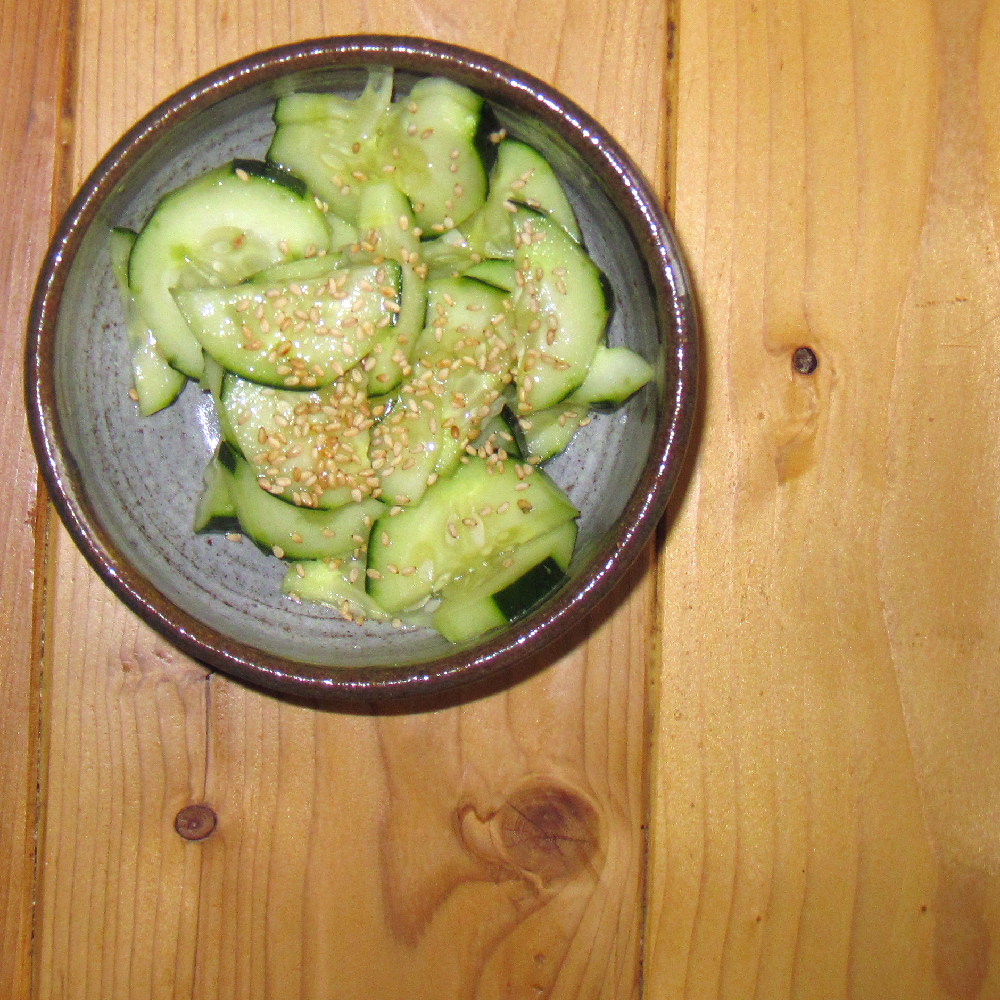

Home
Cucumber Salad

Photo from Wikimedia; Credits to karenandbrademerson on Flickr
So Refreshing Wow
About this recipe
These are cucumbers.
In a salad
Ingredients
- Cucumbers - thinly sliced
- Vinegar
- Sugar
- Water
- Dill
Steps
- Toss the cucumber and onion slices together.
- Boil the vinegar, water, and sugar.
- Pour the vinegar mixture over the cucumbers and onions.
- Stir in the dill and let marinate before serving.